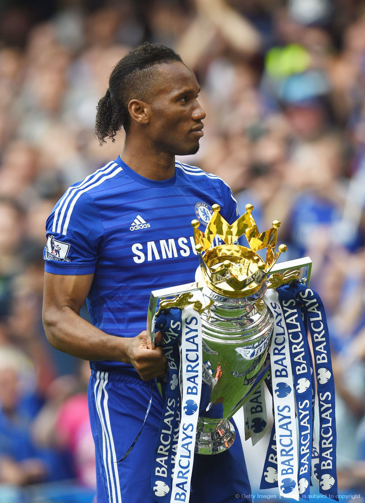
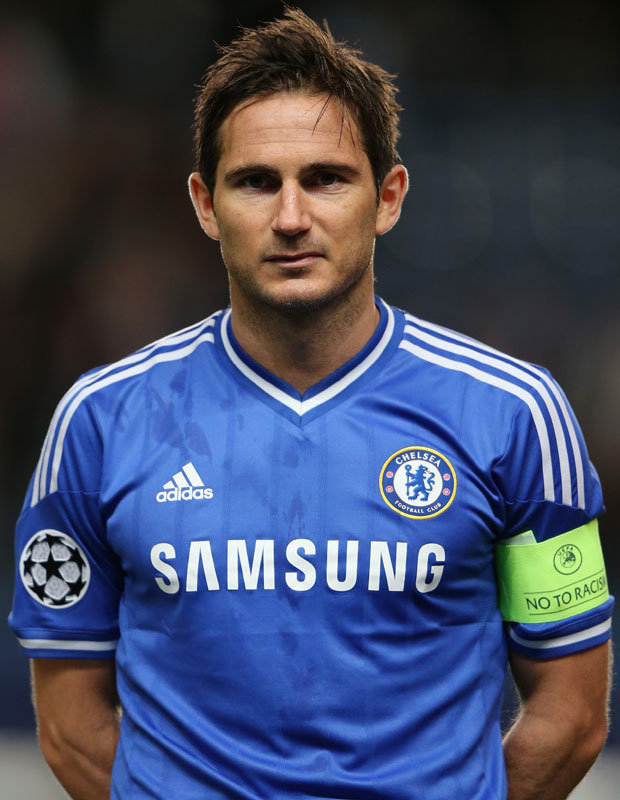
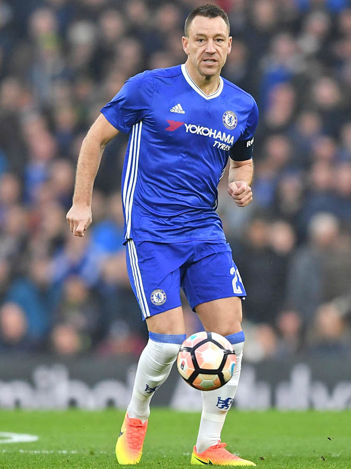

Ranking ulubionych zawodników

Początkowo gracz klubów francuskich, w latach 2004–2012 zawodnik Chelsea. Wraz z londyńskim zespołem m.in. czterokrotnie zdobył mistrzostwo Anglii (2005, 2006, 2010, 2015) oraz wygrał Ligę Mistrzów (2012). W finałowym meczu tych rozgrywek z Bayernem Monachium strzelił wyrównującego gola w końcówce, a w serii rzutów karnych zdobył decydującą o zwycięstwie swojej drużyny bramkę. Dwukrotny król strzelców Premier League (2007, 2010).

Pobił rekord 164 kolejnych występów w Premier League. W klubie z zachodniego Londynu pierwsze ważniejsze trofeum zdobył w roku 2005, wygrywając rozgrywki o mistrzostwo kraju oraz zdobywając Pucharu Ligi. Pod wodzą José Mourinho osiągnął więcej sukcesów; zdobył mistrzostwo Anglii w sezonie 2005/2006 oraz dublet pucharów krajowych w roku 2007. Następnie podpisał nowy kontrakt z klubem, stając się najlepiej zarabiającym piłkarzem ligi. W tym samym roku zdobył bramkę w swoim pierwszym finale Ligi Mistrzów, przegranym z Manchesterem United. W sezonie 2009/2010 razem z Chelsea ponownie sięgnął po dublet. W 2012 roku wygrał z klubem Ligę Mistrzów, a w kolejnym sezonie zdobył Ligę Europy.

Wraz z klubem z Londynu pięciokrotnie został mistrzem Anglii (2005, 2006, 2010, 2015, 2017), pięciokrotnie zdobył puchar kraju (2000, 2007, 2009, 2010, 2012), trzykrotnie wywalczył Puchar Ligi Angielskiej (2005, 2007, 2015) oraz dwa razy sięgnął po Tarczę Wspólnoty (2005, 2009). W 2001 i 2006 roku został wybrany najlepszym zawodnikiem Chelsea FC. Ponadto w 2005 otrzymał nagrodę dla najlepszego piłkarza w Anglii według PFA.